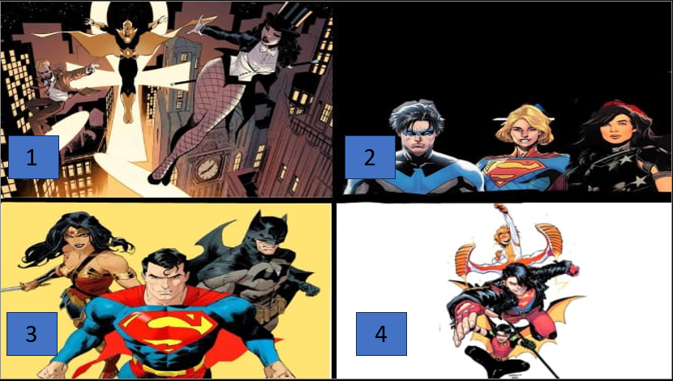
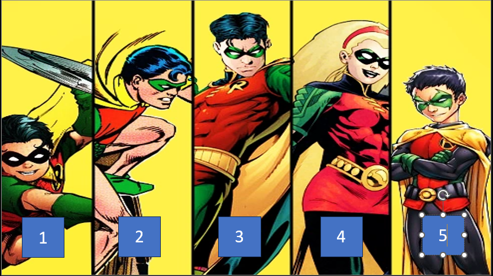
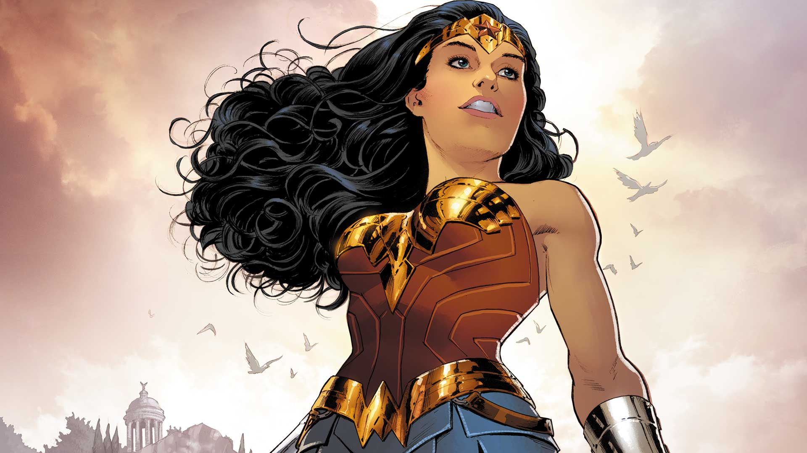

Facil ¿Cuál es la trinidad principal de DC Comics?

Facil ¿Como consiguo sus poderes Flash?

Medio ¿Quien es el primer Robin de batman?

Medio Wonder Woman tiene en sus comics algo que puede hacerse invisible ¿Cual es?
